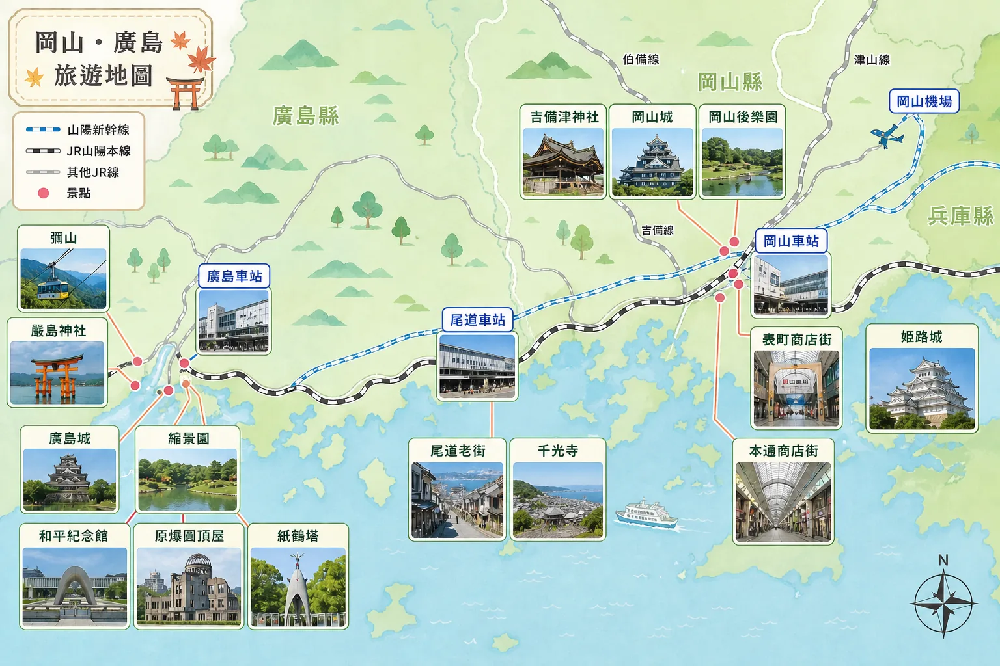

坐計程車去高雄機場
建議提前出發，預留交通與辦理報到時間。
高雄 → 岡山（虎航 IT262）
12:40 從高雄國際機場出發；16:30 抵達岡山機場。
搭乘「機場接駁巴士」前往岡山車站
車程約 30 分鐘。
岡山車站 ＞ 廣島車站（新幹線）
車程約 40 分鐘；搭乘山陽新幹線。
入住東橫INN 廣島新幹線口2號店
辦理入住手續，稍作休息。
車站附近覓食
推薦廣島燒、拉麵、居酒屋等在地美食。
從高雄啟程，沿著山陽線走進廣島、宮島、尾道、姬路與岡山。這是一份為旅途中即時查閱而整理的完整手冊。
高雄 → 岡山 → 廣島 → 尾道 → 姬路 → 岡山
7-Day Hiroshima & Okayama Tour
啟程前往岡山，搭乘新幹線直抵和平之城廣島。
嚴島神社漫步，與野生鹿共度午后時光，登彌山眺望瀨戶內海。
和平紀念公園巡禮，體驗懷舊路面電車，一嚐道地廣島燒。
沿著貓之細道向上，尋找電影中的絕美階梯與瀨戶內海景觀。
世界遺產姬路城巡禮，隨後轉往岡山展開傳說之旅。
日本三大名園「後樂園」，吉備津神社獨特的木造大迴廊。
最後的伴手禮衝刺，帶著豐富回憶與行李賦歸。
Departure 出發
虎航 IT262
10/19 (一) 12:40 高雄(KHH)
→ 16:30 岡山(OKJ)
Return 結束
虎航 IT215
10/25 (日) 15:25 岡山(OKJ)
→ 17:30 桃園(TPE)
今日高低溫：--°C / --°C
1 JPY ≈ 0.215 TWD
最後更新：--
NT$ 28,208
氣溫：15°C ~ 23°C
急難救助專線
090-8794-4072一般業務
06-6443-8481建議提前出發，預留交通與辦理報到時間。
12:40 從高雄國際機場出發；16:30 抵達岡山機場。
車程約 30 分鐘。
車程約 40 分鐘；搭乘山陽新幹線。
辦理入住手續，稍作休息。
推薦廣島燒、拉麵、居酒屋等在地美食。
搭乘 JR 山陽本線；車程約 28 分鐘。
搭乘 JR 西日本宮島渡輪；船程約 10 分鐘。
吃牡蠣、炸楓葉饅頭等在地美食與伴手禮。
品嚐新鮮牡蠣料理與在地特色餐點。
欣賞瀨戶內海美景與自然景觀。
在商店街採買伴手禮；搭乘渡輪返回宮島口。
參觀廣島城天守閣；漫步日本名園縮景園。
在御好燒村品嚐道地廣島燒。
了解歷史，緬懷和平；參觀世界遺產原爆圓頂屋。
廣島人氣商店街購物；百貨公司、美妝、伴手禮一次滿足。
搭乘 JR 山陽本線；車程約 1 小時 28 分鐘。
搭乘千光寺山纜車；欣賞尾道市區與瀨戶內海美景。
在地特色美食；推薦老字號拉麵店。
散步於古色古香的坂道小巷；享受悠閒的海景與咖啡時光。
辦理入住手續，稍作休息；享受飯店設施與瀨戶內海美景。
搭乘 JR 山陽本線；車程約 35 分鐘。
搭乘山陽新幹線「のぞみ」；車程約 25 分鐘。
參觀日本國寶・姬路城；散步周邊景點，品嚐當地美食。
搭乘山陽新幹線「のぞみ」；車程約 20 分鐘。
人氣商店街購物、伴手禮採買；享受在地查食與購物樂趣。
辦理入住手續，稍作休息。
搭乘 JR 桃太郎線；車程約 24 分鐘。
國寶級神社建築；漫步著名的長廊，感受歷史氛圍。
欣賞日式庭園之美；參觀烏城岡山城，眺望岡山市景。
岡山最大商店街，品嚐在地美食；購買伴手禮與特色商品。
岡山車站周邊美食豐富；推薦岡山燒、海鮮料理或拉麵。
超市、伴手禮、藥妝一次買齊；為旅程畫下完美句點。
享用岡山在地美食；請準時結束，預留搭車時間。
前往岡山桃太郎機場；車程約 40 分鐘。
航程約 2 小時 50 分鐘；抵達桃園國際機場。
搭乘高鐵返回台南；結束愉快的旅程，平安回家。
將廣島、宮島、尾道、姬路與岡山的行程景點、交通、餐廳、住宿與購物地點集中在同一張地圖，旅途中可直接縮放與點選標記。
若內嵌地圖受到瀏覽器或網路限制，可使用上方按鈕改由 Google 地圖完整頁面開啟。
依行程移動順序整理日本境內的大型交通節點；可用英文或日文名稱問路，也能用片假名確認讀音與售票機輸入。
| 順序 | 中文 | English | 日本語 | 片假名 |
|---|---|---|---|---|
| 01 | 岡山桃太郎機場 | Okayama Momotaro Airport | 岡山桃太郎空港 | オカヤマ・モモタロウ・クウコウ |
| 02 | 岡山站 | Okayama Station | 岡山駅 | オカヤマ |
| 03 | 廣島站 | Hiroshima Station | 広島駅 | ヒロシマ |
| 04 | 宮島口站 | Miyajimaguchi Station | 宮島口駅 | ミヤジマグチ |
| 05 | 宮島口渡輪碼頭 | Miyajimaguchi Ferry Terminal | 宮島口桟橋 | ミヤジマグチ・サンバシ |
| 06 | 宮島渡輪碼頭 | Miyajima Ferry Terminal | 宮島桟橋 | ミヤジマ・サンバシ |
| 07 | 尾道站 | Onomichi Station | 尾道駅 | オノミチ |
| 08 | 姬路站 | Himeji Station | 姫路駅 | ヒメジ |
Hiroshima Gourmet Guide
Onomichi Local Food
Okayama Food Spots
Souvenir Picks
楓乃樹 楓糖饅頭
宮島人氣甜點，外皮酥脆帶楓糖香氣。
廣島檸檬調味系列
瀨戶內檸檬風味零食、調味鹽與果凍都很熱門。
生紅葉饅頭
Q 彈麻糬口感，比傳統紅葉饅頭更有特色。
尾道拉麵禮盒
很適合帶回台灣煮，經典醬油背脂風味。
瀨戶內海檸檬商品
檸檬蛋糕、檸檬糖與果醬非常有代表性。
貓咪雜貨
貓之細道周邊小店很多，可愛又有尾道特色。
吉備糰子
桃太郎傳說名物，最經典的岡山伴手禮。
白桃果凍／白桃布丁
岡山白桃香氣非常強，甜點類很值得買。
麝香葡萄相關甜點
晴王葡萄餅乾、夾心餅與果乾人氣很高。
TOTAL ESTIMATED EXPENSE
Stay Bases
三個落腳點分別守住廣島、尾道與岡山，白天衝行程，晚上回到車站與港邊都不繞路。
Hiroshima Base
入住 3 晚 | 082-569-1045
距離廣島站步行約 4 分鐘，放完行李就能接上 JR、新幹線與市區移動。前三晚把這裡當成廣島市區、宮島與吳港行程的機動基地，很適合早出晚歸。
1-13-27 Hikari-machi, Higashi-ku, Hiroshima city, Hiroshima 732-0052 Japan
Google MapOnomichi Harbor
入住 1 晚 | 0848-25-6000
尾道這晚換成港邊節奏：車站、渡船口與尾道水道都在散步範圍內。適合把行李放好後，慢慢接商店街、海岸步道與千光寺山的黃昏視角。
Green Hill Hotel Onomichi｜尾道站、港口周邊
Google MapOkayama Finish
入住 2 晚 | 086-224-1045
距離岡山站步行約 3 分鐘，最後兩晚把行程收在岡山站東口。前往後樂園、岡山城或接 JR 支線都直覺，也方便整理戰利品與準備回程。
1-7-3 Ekimae-cho, Kita-ku, Okayama city, Okayama 700-0023 Japan
Google Map